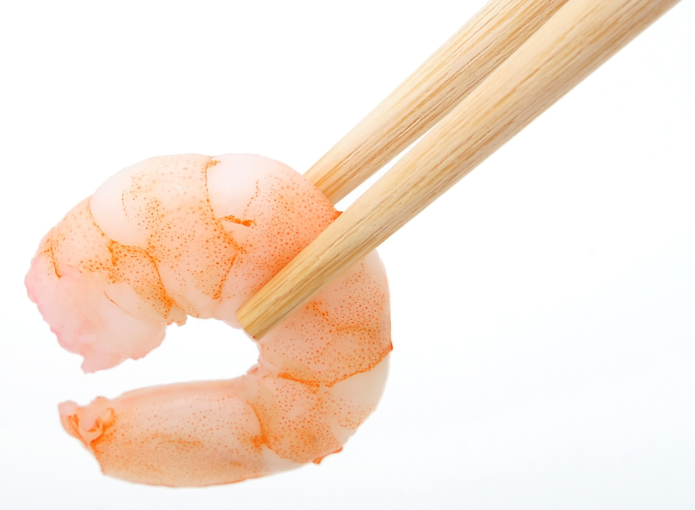

JAPANESE FUSION CUISINE
Authentic Traditionally Inspired & Japanese Dishes

SEASONAL SOUP
Ozio offers a collection of soups each fall that warm hands and make hearts happy. Each fall our sous-chef explore great locally grown flavours to bring the best combinations to awake your senses with our seasoning. (Pumpkin Chipotle Soup)

SAVOURY SUSHI
We have a wide selection of traditional sushi creations as well as creations unique to Ozio Authentic Sushi. We serve maki sushi for people who are becoming sushi lovers to hand-rolled temaki sushi for the more refined palette.
UNDENIABLE UDON
Enjoy a traditional taste of Japanese Udon noodles. We serve Fall Udon soups warm to heat up your taste buds during the cooler weather. Udon come in a number of pairing styles for both the meat lovers and veggitarians - the choice is all yours.
GALLERY
Here are photos to give you
a feel for the local environment that we offer at Ozio Authentic Sushi.
If these images make you feel hungry we can help feed your hungry feeling.



If you've been to one of our restaurants,
you've seen, and tasted, what keeps
our customers coming back for more.
Perfectly fresh ingredients, delicious treats,
and authentic Japanese green tea and
gourmet coffees make us hard to resist!
Stop in today at one of our locations
and see what we have to offer
that will appease every palette.